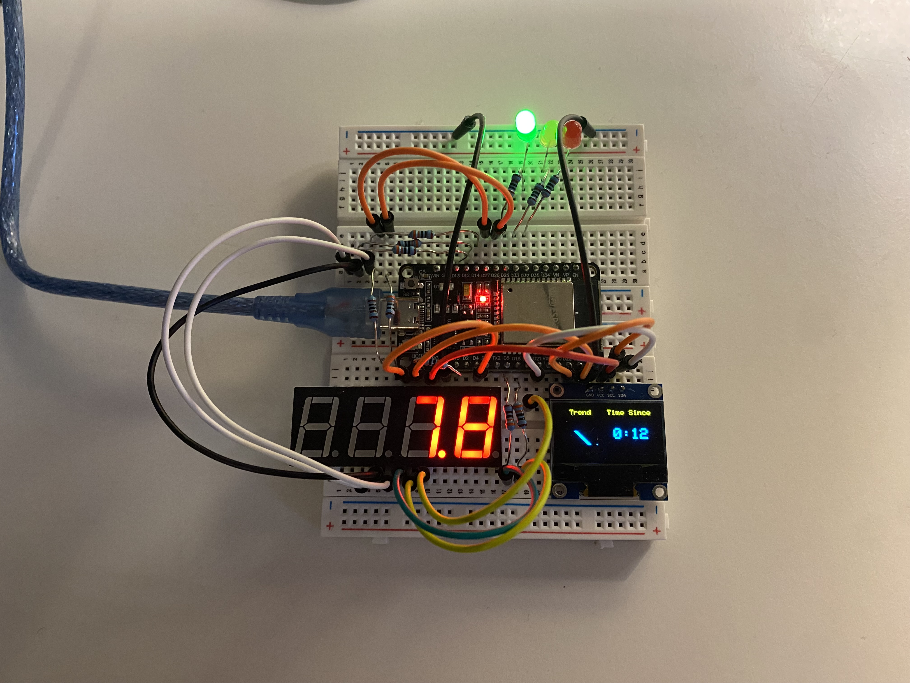

The objective of this project was to provide a physical dashboard representing Dexcom CGM data and status. The benefit of such a device is convenient visualization of glucose data, which otherwise requires opening your phone and then app.

Figure 1: Top-down view of the finalized dual-layer layout showing clean horizontal routing and copper tracking.
Video 1: Hardware validation and real-time 7-segment display streaming demo.